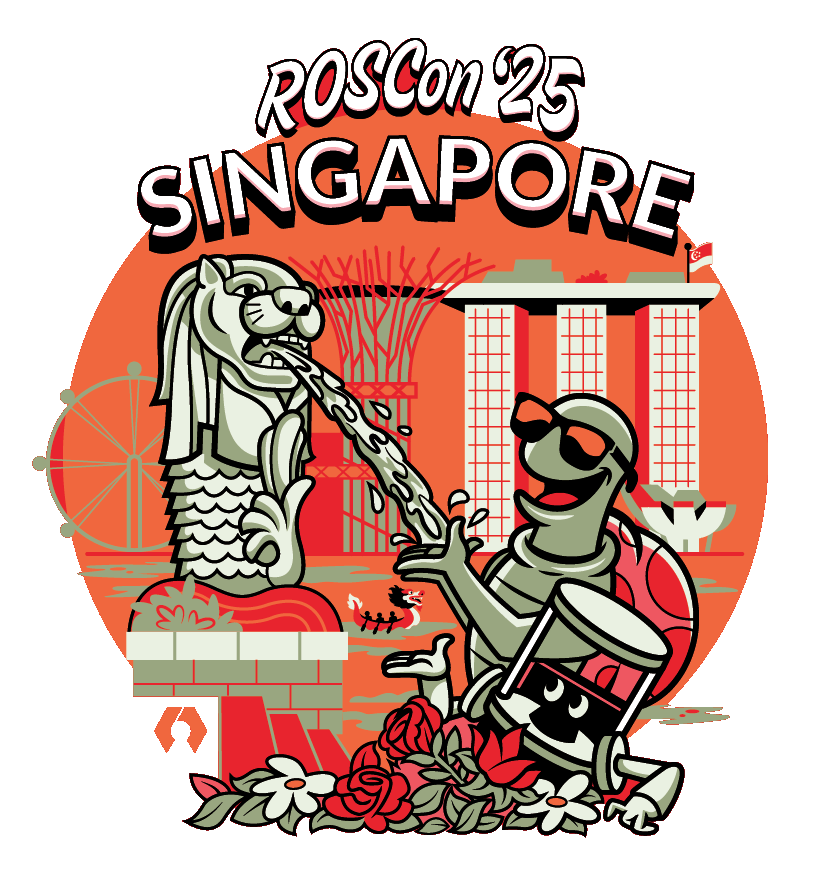
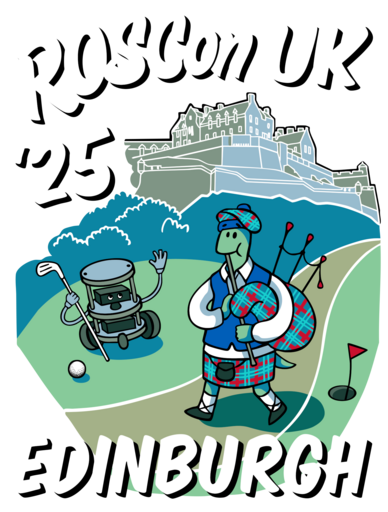

You're reading the documentation for a development version. For the latest released version, please have a look at Kilted.
ROSCon 2025 Workshop
 |
 |
ros2_control: Writing Custom Robot Drivers
ros2_control is a hardware-agnostic control framework for abstracting hardware and low-level control for 3rd party solutions like MoveIt2 and Nav2 systems.
This workshop provides a practical deep dive into writing robot drivers with ros2_control. You will be introduced to hands-on integration of an embedded board that implements a differential drive robot.
Additionally, we’ll demonstrate examples from different domains and best practices for using ros2_control for ease of use, increased flexibility and robustness.
Prerequisites - Before coming to the conference
Please bring a USB-C cable you can plug to your laptop! It should be power- and data-capable.
It is recommended to have a Linux-based OS installed on your laptop (Recommended: Ubuntu 22.04 or 24.04). No ROS setup is required locally, as everything will run in Docker containers.
We need attendees to have docker engine and the docker compose plugin installed. Installation instructions for various platforms can be found on the linked pages.
Pull as soon as you can to verify your setup and get the majority of the download but also try re-pulling closer to the date to make sure you have the latest updates!
wget https://tinyurl.com/roscontrol2025 -O docker-compose.yaml
docker compose pull
For optimal copy&paste experience, you can pull the github repository. Some things are not yet finalized but pulling early and often is a good idea.
git clone https://github.com/ros-controls/roscon2025_control_workshop
Slides
People
This workshop was brought to you by
Dr.-Ing. Denis Stogl, b>>robotized
Dr. Bence Magyar, Locus Robotics
Marq Rasmussen, Locus Robotics
Sai Kishor Kothakota, PAL Robotics
Christoph Fröhlich, Austrian Institute Of Technology